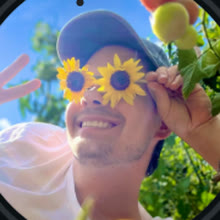

Hi, ich bin [Neko]
Studierter KommunikationsdesignerIch mache Nekos_news, kurze Videos über Politik.
Politik betrifft jeden, fühlt sich aber oft an wie was für Insider. Ich erklär’s so, wie ich’s einem Kumpel erklären würde.

Ich mache Nekos_news, kurze Videos über Politik.
Politik betrifft jeden, fühlt sich aber oft an wie was für Insider. Ich erklär’s so, wie ich’s einem Kumpel erklären würde.
Ich, Neko. Ich bin studierter Kommunikationsdesigner und mache politische Kurzvideos auf Social Media.
Ich setze mich an ein Thema und überlege mir, wie man es kreativ umsetzen kann, damit die Hürde möglichst klein ist, sich für komplexe Themen zu interessieren. Dann recherchiere ich die Fakten und baue das Video in meinem Papier-Look.
Nein. Die News-Seite stellt eine KI automatisch zusammen: Sie fasst Berichte echter Journalist:innen zusammen und verlinkt die Originalartikel. Anders als meine Videos prüfe ich das nicht selbst.
Jeden Morgen gegen 7 Uhr eine neue Ausgabe. Gegen 17 Uhr wird nur ergänzt, wenn tagsüber etwas Großes passiert ist.
Klar, schreib mir an neko.anfragen@gmail.com. Ich kann nicht jedes Thema machen, aber ich lese alles.
Bitte per Mail an neko.anfragen@gmail.com, kurz mit Worum geht’s, Zeitraum und Ansprechperson.
Bald. Hoodie, Kappe und Sticker sind schon zu sehen, bestellen kann man noch nicht.